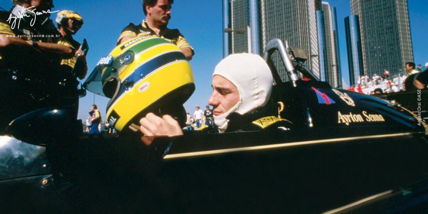
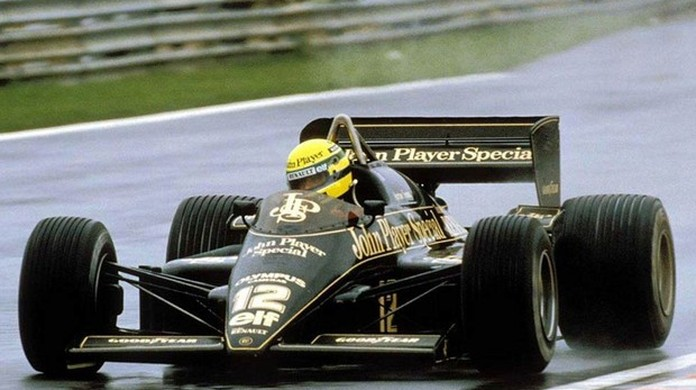
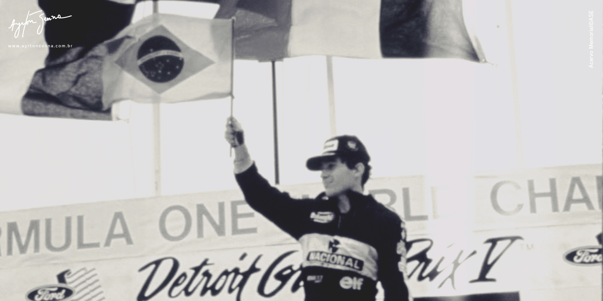

Ayrton Senna da Silva, ou simplesmente Senna, foi um piloto de Fórmula 1 das décadas de 80 e 90 e maior ídolo brasileiro do automobilismo. Nasceu em São Paulo, no dia 21 de março de 1960, e morreu de maneira trágica em 1º de maio de 1994, após colidir com uma mureta de proteção no Grande Prêmio de San Marino, em Ímola.
  
Os norte-americanos nunca foram grandes entusiastas do futebol, mas o clima da disputa do Mundial de Futebol de 1986 havia chegado à Detroit naquele final de semana.
Ayrton Senna conquistou a pole position no sábado com a melhor de suas voltas em 1min38s301, mais de meio segundo à frente do rival Nigel Mansell. Essa era a quarta pole position de Senna em sete GPs na temporada 1986. Mas enquanto Senna dava alegria aos brasileiros por lá, nos gramados do México, o Brasil amargou a eliminação nas quartas de final para a França, país da grande maioria de mecânicos ligados aos motores Renault de sua Lotus – e do rival Alain Prost.
A pequena torcida brasileira presente no circuito de Detroit tinha um pedido especial ao piloto naquele domingo: dar “um olé no francês” Prost e assim vingar “a pátria de chuteiras”. Ayrton Senna viu esse cartaz exposto e riu, levantando o polegar com o sinal de positivo quando entrava em seu carro negro e dourado para a corrida. O brasileiro havia aceitado o desafio.